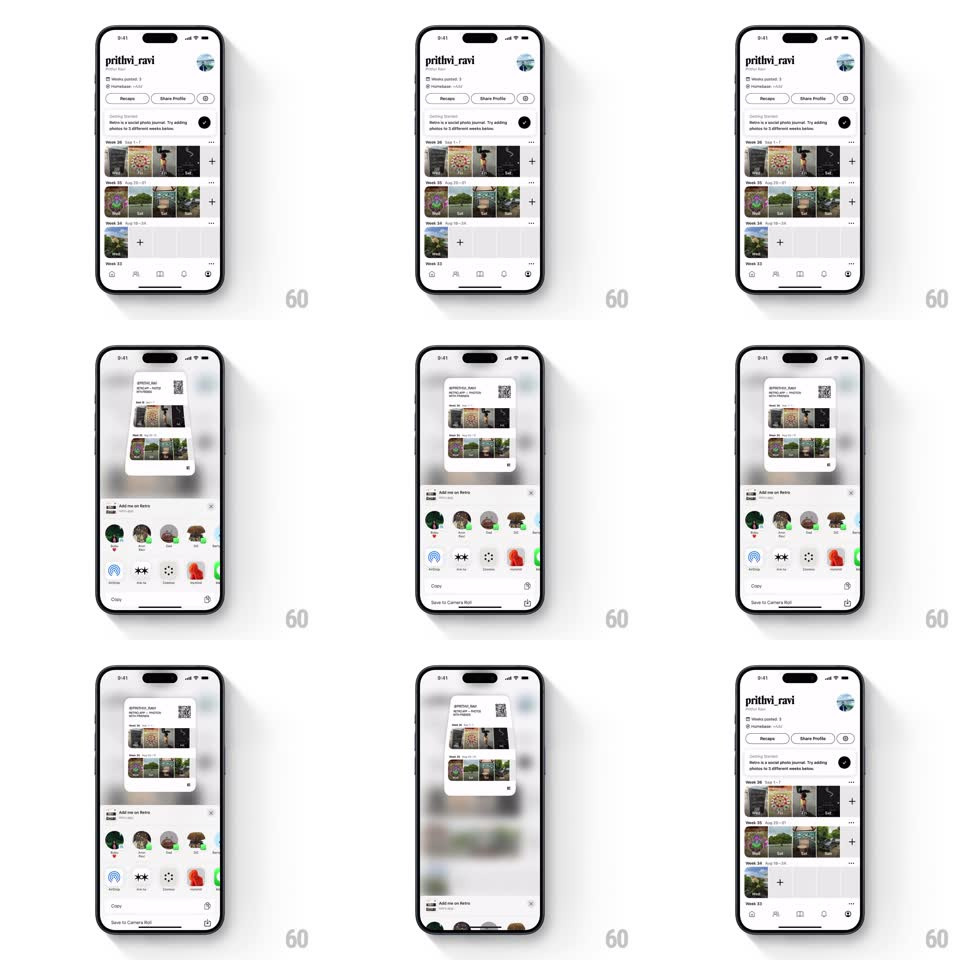

Media
Frame-by-frame

Rebuild this interaction 1:1: Retro's share profile - tapping "Share Profile" lifts a custom profile card off the page with a scale-up, blurs the profile behind it, and slides the share sheet up under the floating card with a spring.

Rebuild this interaction 1:1: Retro's share profile - tapping "Share Profile" lifts a custom profile card off the page with a scale-up, blurs the profile behind it, and slides the share sheet up under the floating card with a spring.
## Integration
Integration: stack-agnostic spec - springs given as stiffness/damping, timed motions as duration + curve; map every value to your framework and animation library of choice.
## Scene
Profile page ("prithvi_ravi") with a week-by-week photo journal. Share state: a white profile card - avatar, name, handle, QR-style code, week thumbnails, "Save to Camera Roll" - floats center over a dimmed, blurred profile, with the share sheet ("Add me on Retro" contact row, AirDrop / Messages / WhatsApp / More icons, Copy) sliding up beneath it.
## Motion spec
Pattern: card lift + spring sheet, ~600ms.
- Tap: the background dims to 40% and blurs (20px, 300ms).
- Card: the profile card scales 0.85 -> 1 with a spring (~340/20, 400ms) and rises 30px, casting a soft shadow (blur 24px, 25% opacity).
- Sheet: the share sheet slides up from the bottom (spring ~300/24, 450ms) settling with one small overshoot; the card stays above it.
- Stagger: contact avatars pop in along the sheet row (spring ~400/18, 30ms stagger).
- Dismiss: tapping the dimmed area drops the sheet and scales the card back into the header (350ms, ease-in-out).
## Calibration
- The card floats independently of the sheet - two separate moving layers, not one panel.
- The profile card never covers the sheet's contact row.
## Reduced motion
Background crossfades; card and sheet fade/slide without spring overshoot.
## Don't miss
- The card's scale-up begins from the profile header position, not from screen center.
- The sheet's settle overshoot is visible but small (about 6px).